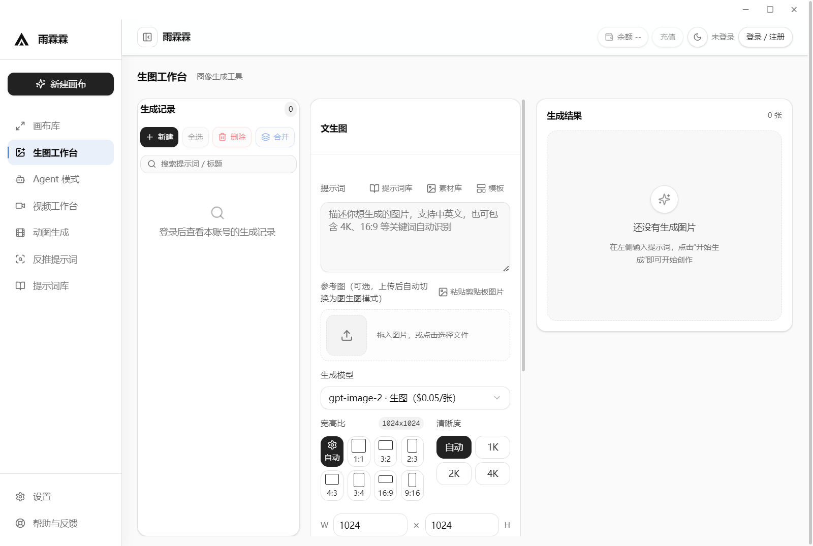
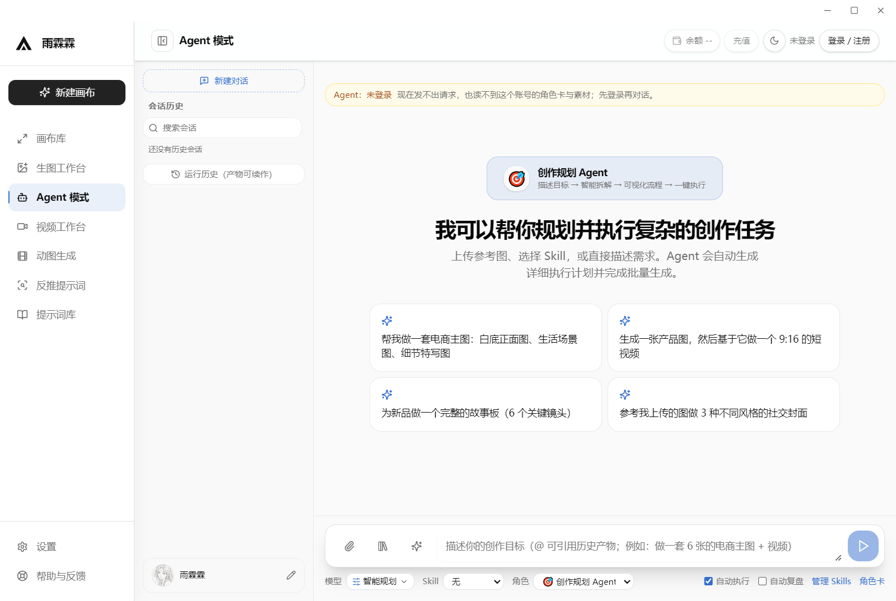
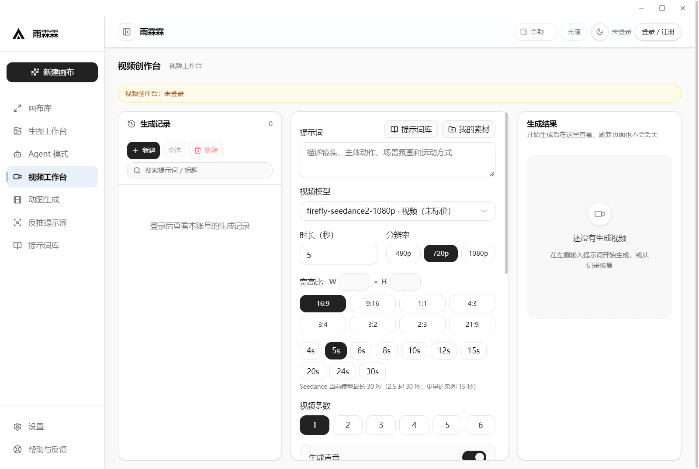
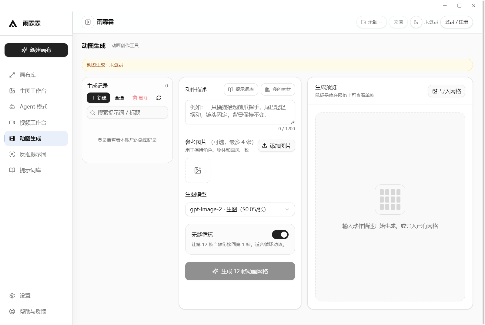
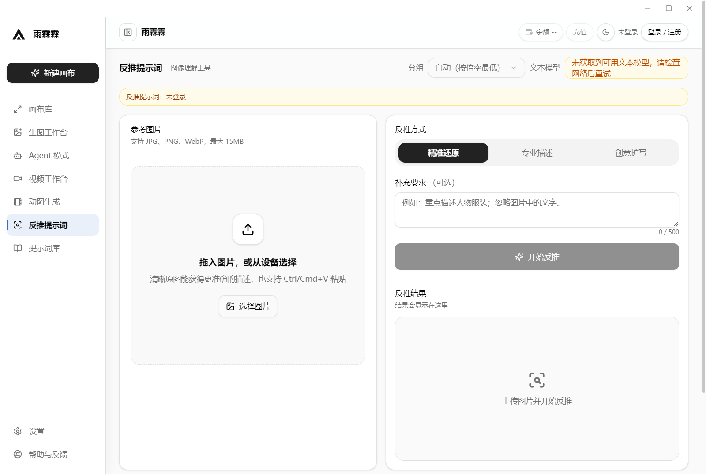
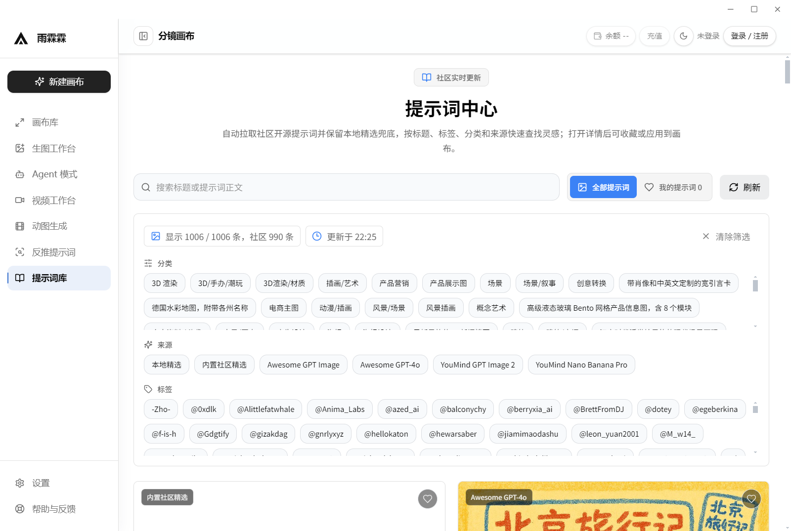

WINDOWS X64 桌面客户端
生图、画布、视频、动图
都在同一个窗口里
生成的图直接落到本地记录里，翻得回去、改得动、能接着排版出片。不用在几个网站之间来回倒文件。

怎么用
四步出第一张图
没有引导页，没有新手任务。装完打开就能用，下面这四步是它全部的前置动作。
-
01
下载安装包
Windows x64 的 exe，双击就跑。按用户安装，不弹管理员授权，也不会往系统目录塞东西。
-
02
登录一次
首次启动登 api.wbsjl.com，生图和视频都走这个账号。令牌加密存在本机，下次打开不用再输。
-
03
写提示词
模型和单价按你的账号列出来，不用另找。写句话就开始生成，也可以传参考图、定宽高比和清晰度。
-
04
出图之后
结果自动进历史记录，随时能翻回来。想继续做就丢进画布排版、去视频台出片，或者交给 Agent 批量跑。
界面
看下实际长什么样
都是应用里直接截的。版本更新得快，你下载到的可能和这几张略有出入。





功能
从想出来到能用，中间不用换工具
生图、画布、视频、动图、素材、提示词、Agent，都在一个窗口里。文件不用导来导去，记录也不会散在几处。
生图工作台
一次提交可以带好几张任务，逐张勾选、逐张看结果。生成过的自动进记录，翻回去还能接着改。
画布
把出好的图拖到一块画布上摆位、改大小、调前后。项目能存下来，下次打开接着弄。
视频工作台
5 秒到 30 秒，最高 1080p，一次能排 6 条。去改别的设定再回来，记录还在原地。
动图生成
丢几张参考图进去稳住角色和画风，一次出 12 帧。勾上无缝循环，直接就是能用的表情包。
反推提示词
看到别人出的图想要同款，传进去把提示词套出来。想照抄、想看懂、想换个方向，都能选。
素材库
图、动图、视频都放一处，按名字搜、按类型筛、不要的删掉。图片和视频用同一套操作。
提示词库
一千多条现成的，按分类和标签翻。收藏下来的能直接用进画布，反推出来的也会存进来。
Agent 与自动化
把目标说清楚，它自己拆步骤、批量跑。切去别的模块看看，正在跑的那一轮不会被打断。
更新日志
改了什么，翻这里
从 GitHub Releases 实时读。赶上接口限流读不到，会退回到本地快照并标明，不会给你看空白。
常见问题
常见问题
安装、更新、数据放哪儿，这里一次说完。
01支持哪些系统？
现在只有 Windows x64 的安装包（NSIS 方式，按用户安装，不弹管理员授权）。macOS 和 Linux 还没做，更新日志里也没有相关记录。
02安装包有多大？
最新版约 78 MB。早几个版本体积不太一样（早期到过 154 MB 左右），每个版本的实际大小在 GitHub Releases 那一页的资产栏里写着。
03下载后提示「Windows 已保护你的电脑」怎么办？
这是 SmartScreen 的常规提示——因为没买代码签名证书，不是安装包有问题。点「更多信息」→「仍要运行」就能装。
安装包由 GitHub Actions 自动构建，源码和构建日志都公开。不放心可以到 Actions 页面 对着看一遍。
04应用会自动更新吗？
会检查，但不会偷偷装。启动时它去 GitHub Releases 看一眼有没有新版，有就在界面上告诉你，下不下、装不装由你点。不会后台自动下载，也不会趁你退出的时候静默安装。
更新包同样走 GitHub Releases，装之前能看到版本号和这次改了什么。
05需要登录或配置什么才能用？
第一次打开要登一次 api.wbsjl.com 的账号，生图和视频都走它。令牌加密存在本机，之后不用重复登。
模型和单价按你的账号列出来，界面上直接能看。要是你手上已经有别的 New API 中转站，也可以在设置里改成自己的地址和密钥。
06数据存在哪里？会不会上传？
生成记录、图片、视频、画布项目、素材，全都留在本机，不上传。具体路径在「设置 → 关于」里能看到。
登录令牌走系统自带的加密（Windows 上是 DPAPI / safeStorage），不和你的生成内容放在一起。想彻底清干净，卸载完再删掉数据目录就行。
07怎么反馈问题或提需求？
到 GitHub 开 issue：wbsjl321/ai-image-workbench/issues。写清楚版本号、系统版本和怎么复现，能省不少来回。
联系
找我们
问题反馈请走 GitHub Issues，响应最快。也欢迎直接到网关站点了解接口与计费。